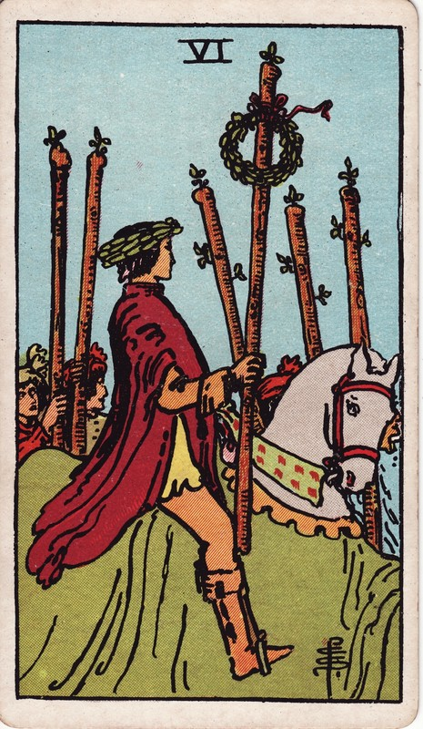

骑手头戴桂冠、权杖也系桂冠，身后人群跟随，象征公开胜利、领导位置与随之而来的责任。
象征推演：它是战车的小牌版本：同为经努力赢得的胜利。战车凭意志控制战局，权杖六则骑白马凯旋——红衣象征热忱，桂冠与群众的欢呼属于形于外的世俗胜利。
努力被看见，阶段胜利带来信心与影响力。接受认可的同时，要记住成果也来自团队支持。
成果可能没有得到预期掌声，或对认可的依赖压过了工作本身；也可能是好消息变坏消息，或成功迟来才到。也要警惕胜利后的自我膨胀。
学习提示：权杖六是被看见的胜利，也考验你如何使用认可。
正位：The card has been so designed that it can cover several significations; on the surface, it is a victor triumphing, but it is also great news, such as might be carried in state by the King's courier; it is expectation crowned with its own desire, the crown of hope, and so forth.
逆位：Apprehension, fear, as of a victorious enemy at the gate; treachery, disloyalty, as of gates being opened to the enemy; also indefinite delay.
出处：A.E. Waite《The Pictorial Key to the Tarot》(1910)，公有领域。古典断语反映二十世纪初的读法，与上方现代心理向解读互为古今对照；重大议题请以自我觉察为先，牌不做医疗/法律/财务建议。
塔塔🔮の心灵疗愈室 · 牌义百科为站内容自留地：中文解读自有，古典断语公有领域署名引用。https://cindysd.github.io/tata-public/